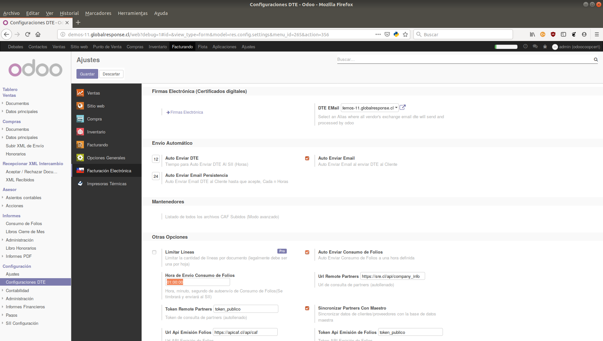

Soporte Complementario
Recibirá 90 días gratis para instalación o reinstalació (se excluye recuperación de información) o cualquier incidencia relacionada a este módulo en particular.
Utilidades Extras para Consumo de Folios.
Se puede configurar a qué hora se auto envía el consumo de folios
Tomar en cuenta de que el módulo se creará con los datos del día anterior, vale decir, con todas las ventas que se hayan sincronizado hasta ese momento.
Por ahora si hay ventas pendientes que no fueron sincronizadas a tiempo debido al modo offline debe manualmente crear el consumo de folios para el día en particular

Recibirá 90 días gratis para instalación o reinstalació (se excluye recuperación de información) o cualquier incidencia relacionada a este módulo en particular.